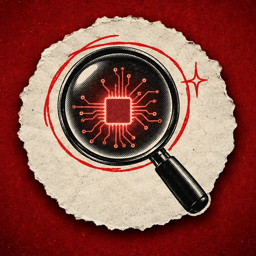

Achados de IA
Ferramentas de IA e tecnologia que mudam o seu dia, mostradas em vídeos curtos.
Ver no TikTokSobre
Este perfil testa e mostra produtos de IA e tecnologia. Alguns links são de afiliado: se você comprar por eles, o perfil recebe uma comissão e você não paga nada a mais. Conteúdo patrocinado é sempre marcado com #publi.
Automaton
Automaton é a ferramenta interna, de uso pessoal, que o perfil usa para planejar, enviar e acompanhar os próprios vídeos no TikTok pela API oficial. Ela não é oferecida a outras pessoas.